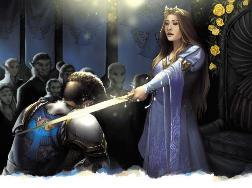

成为贵族意味着什么？在科瓦雷的大多数国家，贵族活跃地对各个级别的封地――无论大小――进行管辖。他们收税，维护本地秩序，并管理佃农。贵族可能不会亲自主持司法，但在他们的封地内，他们仍然有责任主持法庭，维护法律的权威，确保正义得到伸张。终末战争结束后，贵族们努力让领地从战争的损害中恢复，让士兵重新融入平民生活，应对人口伤亡的影响，并解决在其领地寻求庇护的难民的需求。权力越大，职责越多……因此，很少有土地贵族有时间去冒险。
创建一个既是冒险家又是土地统治者的玩家角色并非不可能；也许你有个弟弟妹妹或出色的管家，在你不在时完成所有工作。但更有可能的是，作为一名“贵族”冒险者，你只是一个权势家族的后裔，一个尚未持有重要头衔的继承人。你的血统赋予你威望，但你既不承担所处贵族等级的责任，也不能调动家族领土的全部资源。
在第五版中，这种地位通过贵族背景的增益体现。作为贵族，你没有一支随叫随到的军队，也没有一个装满财富的金库――毕竟，你不是负责征收税款的人。你所拥有的是一些熟练项、带有你家族家徽的玺戒、一套华丽的衣服、口袋里的 25 金币……以及一个名为“特权地位”的特性：
“由于你的贵族血统，人们总是会予你优待。高等社会愿意接纳你，人们认同你有权去任何你想去的地方。平民们会尽力满足你的要求，避免你产生任何不快，而那些同样出身高贵的人则会视你为同一个社会圈子的人。你还可以在必要时前去拜会任何当地的贵族。”
（译者注：上面这一段直接引用自PHB背景一节的译文）
这强调指出，虽然贵族的具体职责和权力因国家而异，但共同享有受到尊重的益处。作为拥有该背景的玩家角色，你会被其他贵族（甚至你祖国之外的）视为同类，且一般会被平民欢迎――尽管后者这样做可能出于自我保护而不是钦佩。你不能凌驾于法律之上；你不可能逃脱谋杀罪，但人们倾向于认为你是好人，并期望你维护了所处地位的荣誉与尊严。
在五国中，即使你在某个地区没有实际统治权，或者完全身处外国，你的地位也会得到认可。
这与伽利法有一天能被恢复的理想有关；所有贵族都尊重其他国家的贵族，因为有一天，他们或许能再次身处一个王国。即使在达贡和摩洛领，实用主义也确保你的人脉关系能起作用；尽管着或许仅意味敌人更倾向用你进行勒索而不是杀了你。
“特权地位”表示了你的权力所带来的好处，但并非所有贵族都能获得如此尊敬。如果你是塞尔贵族，则你不会继续拥有过去的的地产或财富。若你的家人非常受人爱戴或人脉宽广，以至于过去的对你们的尊重依然存留，你可以仍然保留特权地位；但大多数塞尔贵族并没有被如此对待。在这种情况下，你可以选择“家仆”特性（来自《玩家手册》中的“变体特性：家仆”边栏）。也许你的庄园因哀悼而毁灭，但仍有三名忠诚的仆人发誓追随你直到最后。或者，如果你的威望和臣仆都化作烟尘，但与你家族遗产相关的人依然对你有好感，你可能会选择流亡贵族背景，这在本章的“贵族变体：流亡者”边栏中介绍。
然而，你的角色不必因扮演一位贵族就锁定贵族背景。您可以自定义背景、混合背景或匹配其他背景特性及熟练。例如，如果你是一位在失去财产后转向犯罪的塞尔伯爵，你可以选择犯罪背景，或者干脆用其犯罪联系特性代替特权地位――尽管从故事中而言，你是个拥有土地和头衔的贵族；但如今，你并没从出身中到任何实际的好处。同样，如果你是一位塞尔贵族并曾为帮助其他塞尔难民而战，那么你可能会成为一位平民英雄，能在任何难民社区找到庇护所。
因此，无论你是被奸诈的兄弟姐妹赶下宝座的拉扎尔公子，还是顽抗堡Stubborn（位于今日卓姆领土内的前布鲁兰的聚居地，现在被称作石颚Stonejaw要塞）的前领主，你都可以选择你想要的任何特性，包括本章中的变体特性。
贵族变体：流亡者Variant
Noble: Displaced
哀悼和《王座堡条约》(Treaty of Thronehold) 重塑了五国以及全大陆的国境线。你的家族已被吞并、赠予另一个家庭，或被死灰色的迷雾所笼罩。不幸地，您无法再享受头衔的直接好处；但您家族的遗产将继续存在 特性：铭记忠诚Feature:
Remembered Loyalty
很多人还记得曾经的岁月。当你到达一个新的聚落时，与你的 DM 讨论创建一个你在在过去生活中认识的 NPC。 如果你和他们接触，他们会很好地款待你，为你提供食物和住所。这个NPC可能是你家族的成员，也可能是曾生活在你庇护下的平民；你可以在下面的表格上投骰选择。 |
|
|
d8 |
NPC |
|
1 |
庄园守卫 |
|
2 |
农民或面包师 |
|
3 |
宫廷魔匠师 |
|
4 |
管家或财务主管 |
|
5 |
佣人或佣人领班 |
|
6 |
牧师或祭司 |
|
7 |
马车夫或驯马人 |
|
8 |
铁匠或武器匠 |
正如你能在不选贵族背景的情况下扮演贵族一样，即使你的角色并非贵族，你也可以拥有“贵族”背景或其特权地位特性。对于富有或影响力高的龙纹家族成员来说，这是个非常合适的选择。
作为一名带有龙纹的“贵族”，你要么接近家族领导层，要么属于家族中格外富有或有权势的分支――人们都知道这一点。你被贵族们平等对待，你可以请求觐见地方当局，而不少平民都对你有所耳闻。
就像冒险者会成为士兵或罪犯一样，在一场战役中，他们也有可能晋升为贵族。与此相关的传统将在后面的章节中描述；这种提升的实际影响是什么？新贵族会获得特权地位特性吗？他们的职责与责任是什么？
冒险者可能获封贵族头衔作为服务的奖赏；在某些国家，士兵可以通过军功赢取头衔。这可能是一个实质性的头衔――授予土地和臣民，能传给继承人――或者只是一种不附带土地和职责的荣誉。被授予爵位可能不会带来特权地位的好处，但它也不会阻止你进一步的冒险。
另一方面，成为拉扎尔公子会赋予你这种特权，但它也会让冒险生活更加复杂！你要么需要管理你的公国，要么雇人为你做这件事（维纶娜模式）并希望他们做得很好。
如果授予玩家角色实质性头衔是进行中活动的一部分，DM可能希望将领土的管理和防御等方面纳入战役展开。除此之外，如果勃兰奈尔Boranel授予某角色东方之盾的头衔，这会是一种象征性的荣誉，对布鲁兰贵族具有重要意义（因为它反映了国王的青睐），但不授予任何切实的职责，也不具有特权地位特性对外国的影响。
“贵族变体：新贵”边栏提供了一个背景变体，如果角色的迅速崛起引起了那些希望从你冉冉升起的权势中获益者的注意，你可以选择该背景变体。或者，DM 可能会考虑将“新星”特性授予在战役中晋升为贵族的角色。
贵族变体：新贵Variant
Noble: Newly Rise
你的家族最近跻身贵族行列。为王室服务、英雄事迹或极其慷慨的捐赠可能导致了你的擢升。尽管其他历史悠久、根深蒂固的贵族家庭对拥有基本的尊重，他们仍然可能会蔑视你。 与此同时，也不乏其他人希望搭上你的顺风车，过上新的、更美好的生活。 特性：新星Feature:
Rising Star
在您的祖国，您的名字在富人之中广为人知。您通常受到小贵族和中产阶级的最大尊重。 您可以期望这些人提供合理的住宿和内幕信息，以换取简单的非金钱恩惠，例如将他们的姓名或业务详细信息传递给另一位贵族。 |
正如出身卑微的人可以受封贵族头衔一样，出身高贵者也能失去它。被剥夺头衔的最简单途径就是犯下叛国罪。此外，在五国，贵族是有法定义务的，如果一个家庭没有履行这些义务，可能会被君主剥夺其头衔和财产。在拉扎尔公国，一个角色会因为其他人强行夺取头衔而失去地位；无数的塞尔贵族在哀悼中失去了他们的财产，然后被《王座条约》合法地剥夺了贵族特权。下表提供了冒险者家人为何失去头衔的灵感；虽然表格假设是长辈失去了头衔，但也可能是冒险者自己失去了它。
|
d6 |
剥夺的原因Reason for Loss |
|
1 |
你的先人企图弑君，却失败了。 你知道是什么驱使他们尝试这种犯罪吗？ |
|
2 |
头衔和土地。他们被诬陷犯了什么罪？ |
|
3 |
终末战争期间，你的领地被敌人夺走了。现在谁持有它？ |
|
4 |
你的长辈在终末战争期间与敌人合作并被判处叛国罪。他们这么做有什么目的？ |
|
5 |
你的领地被在被超自然力量占据后废弃。它是被致命的不死生物困扰还是被来自凯博尔的异怪所控制？造成这种情况的原因是你的祖先吗？ |
|
6 |
你的祖先拒绝遵守这片土地的法律。他们颓废、腐败还是玩忽职守？或者，他们实际上是站在正义这一边的？ |
如果玩家角色在战役期间被剥夺头衔，则应当由玩家和DM 共同决定这如何影响他们的特权位置。如果角色广为人知和受人爱戴，那该特性可能能基于善意持续存在。作为 DM时，如果我（原文如此，大概指KB本人）删除了特权地位特性，我会根据损失情况授予新特性来取代它。贵族若因为反对暴君而被判叛国罪，则他们可能会失去特权地位，但会获得平民英雄的好客乡民特性……或也许其恶行为他们赢得了海盗的恶名特性。“变体贵族：受辱者”侧边栏提供了DM在战役期间可以授予的背景变体；玩家也可以为最近失去地位的新角色选择该背景变体。
变体贵族：受辱者Variant
Noble: Disgraced
虽然你是贵族中的一员，但你的家族却失去了同侪的尊敬。你受辱的根源可能是你家族所有成员共同的债务或失败，比如有成员被指控或犯下重罪。 特性：丑闻Feature: Scandalous 你的姓氏和其所谓的失败众所周知。贵族和老实的平民会按礼节标准表现得彬彬有礼，但他们倾向把你往坏处想。与此同时，还有很多人想利用你的地位。你总是可以寻求与非现任家主的贵族或当地犯罪头目进行秘密会面。 |